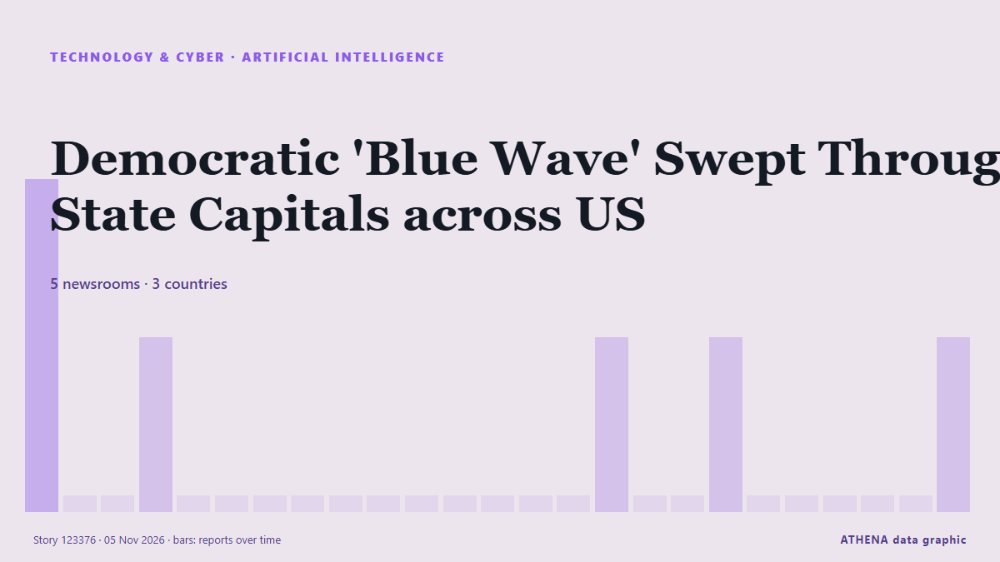

Artificial intelligence
SponsoredPresented by  Cybernetics and Artificial Intelligence Lab Welcome to the Cybernetics and Artificial Intelligence Laboratory, established at the Department of Business Administration of the National and Kapodistrian University of Athens. The lab is headed by Professor Dimitrios Thomakos. The lab aims to do research that can be published in top venues. Our research uses tools and methods of Artificial Intelligence, and lies in the following areas: - Forecasting - Decision making - Cyber security - Finance We are always looking forward to collaborating with exceptional students!
Cybernetics and Artificial Intelligence Lab Welcome to the Cybernetics and Artificial Intelligence Laboratory, established at the Department of Business Administration of the National and Kapodistrian University of Athens. The lab is headed by Professor Dimitrios Thomakos. The lab aims to do research that can be published in top venues. Our research uses tools and methods of Artificial Intelligence, and lies in the following areas: - Forecasting - Decision making - Cyber security - Finance We are always looking forward to collaborating with exceptional students!
| 23 Oct | 0 |
|---|---|
| 24 Oct | 0 |
| 25 Oct | 0 |
| 26 Oct | 0 |
| 27 Oct | 0 |
| 28 Oct | 0 |
| 29 Oct | 0 |
| 30 Oct | 1 |
| 31 Oct | 0 |
| 1 Nov | 2 |
| 2 Nov | 7 |
| 3 Nov | 8 |
| 4 Nov | 5 |
| 5 Nov | 1 |

Democratic 'Blue Wave' Swept Through State Capitals across US
Democrats absolutely crushed Republicans during the US midterm elections. from CleanTechnica
Google turns off AI for schoolchildren by default
Google has said it will switch off its AI tools for schoolchildren by default, after drawing criticism for pushing artificial intelligence features to students while schools are still debating how… from Vanguard
‘Godfather of AI’ Warns of ‘Chernobyl-Like’ AI Crisis Soon
Geoffrey Hinton, a Nobel Prize-winning computer scientist widely regarded as one of the pioneers of artificial intelligence, has warned that AI could trigger a Chernobyl-like crisis in the near… from Khaama Press
Tencent Targets Financial Analysis With Hy4 AI Model
Tencent has released its latest generation large language model, Hy4, saying in a Wednesday (Nov. from PYMNTS
Netflix’s new AI Discover tab helps you find something to watch based on your mood
The first experimental feature under the tab will allow users to get recommendations based on what they're currently in the mood for. from TechCrunch
CrowdStrike to Acquire 2 Firms to Secure Enterprise AI Agents
CrowdStrike plans to make two acquisitions that will add artificial intelligence (AI) observability and automated AI security testing to the CrowdStrike Falcon platform, the company said Tuesday (Nov. from PYMNTS
Google AI chatbot may break press copyright rules: EU legal adviser
Google’s AI chatbot Gemini may infringe press copyright rules by reusing published content to generate answers, as highlighted by an EU legal adviser in a landmark case involving Hungarian publisher… from IOL
OpenAI hires former US Army Secretary Dan Driscoll for national security
OpenAI has hired Dan Driscoll, the 26th Secretary of the US Army, the company said on Monday. from The Next Web
(LEAD) Lee orders review for establishment of cybersecurity task force
SEOUL, Nov. 3 (Yonhap) -- President Lee Jae Myung on Tuesday instructed official... from Yonhap (English)
Alibaba partners with Apple to integrate Qwen AI model into Apple Intelligence for Chinese market
Feature to launch with official iOS 27.3 release in December. from Anadolu Agency (English)
Anthropic Reports $17 Billion Quarterly Revenue Ahead of IPO
Anthropic’s revenue reached $17 billion for the three months ended Sept. from PYMNTS
OpenAI launches 'Grid Protectors Program' to reduce data center electricity demand when the US grid is under strain
As company looks to avoid the anti-data center local pushback. from Data Center Dynamics
Elon Musk says 'unsustainably high' costs are the reason for Grok Bot usage limits
The SpaceX CEO said the cost of serving the AI agent was "unsustainably high relative to revenue," after some users complained about usage limits. from Business Insider
Economic anxiety, political doubts shape young Americans' midterm choices
Advocates are enthusiastic about the potential for increased youth voter turnout in key races in Tuesday's midterms. from The Hill
ADNOC becomes first energy company to deploy OpenAI Frontier in landmark deal with G42
Announced at ADIPEC 2026 in Abu Dhabi, the partnership aims to value crude before extraction and slash oilfield planning times from months to hours. from Arabian Business
AI models mostly smarter than top scientists, OpenAI's Altman says
CEO says AI models capable of performing white-collar work but people must 'remain in control of the future' from Express Tribune
Merz says next German president 'must be a woman' — report
German President Frank-Walter Steinmeier's second term is due to end in March next year. from DW English
Oracle taps investors for US$20bil to finance AI expansion
NEW YORK: Oracle plans to raise US$20 billion through bond and share sales, regulatory filings showed on Monday, as the software giant taps investors to fund its costly AI and cloud infrastructure… from New Straits Times
HSBC to open Hong Kong AI Institute following Singapore launch
The AI unit will work with Hong Kong University of Science and Technology as its anchor academic partner, although the bank's CEO Georges Elhedery did not disclose headcount details. from CNA (Channel NewsAsia)